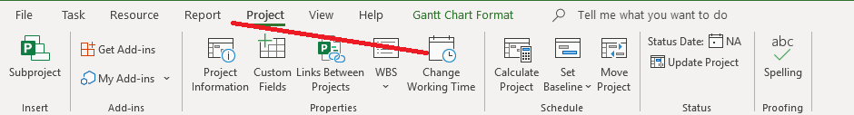
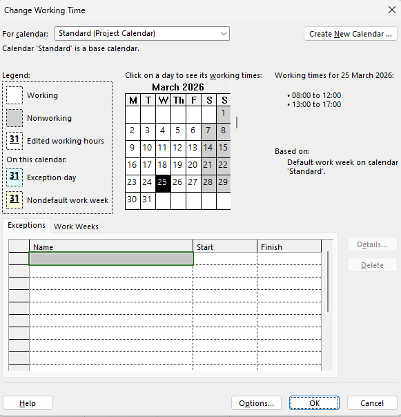
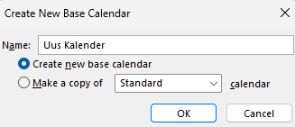
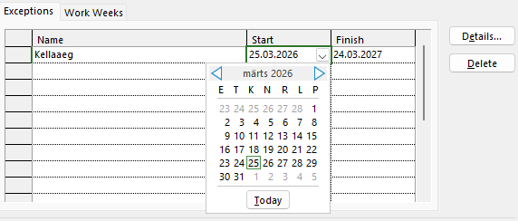
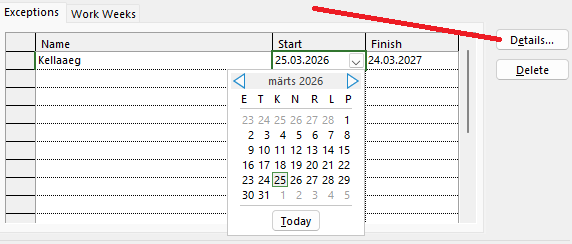
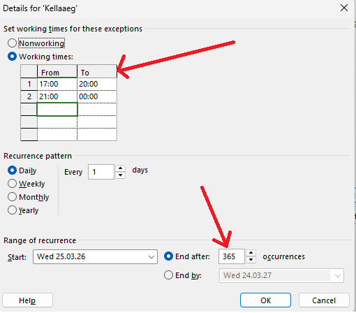
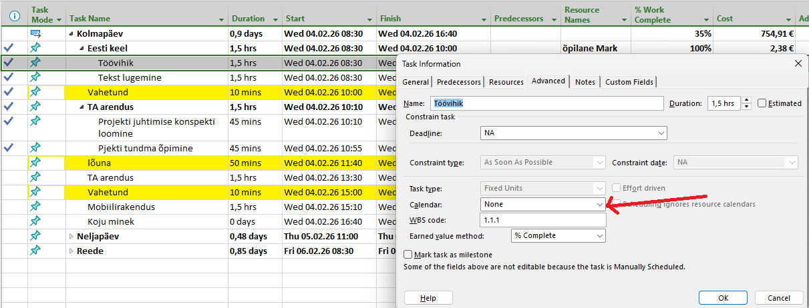
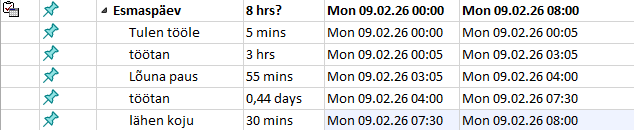

1. Ava tööaja seaded
Vali „Projekt" ja seejärel „Muuda tööaega".

2. Loo uus kalender
Siin vajuta nuppu „Loo uus kalender".

3. Vali kalendri tüüp
Vali „Loo uus põhikalender".

4. Määra alguskuupäev
Valid start Date.

5. Ava detailid
Vajutad Details.

6. Seadista tööajad
Paned siin aeg "From - To", ja kui palju see kalender töötab.

7. Rakenda kalender ülesandele
Pärast topeltklõpsuga valid kus ta tahad panna see uus aeg.
Valid Advanced ja panid siia oma uus kalender.

8. Näide
Näide.
